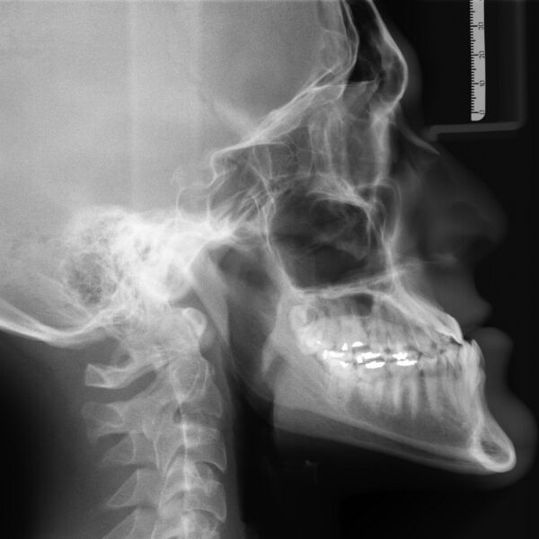
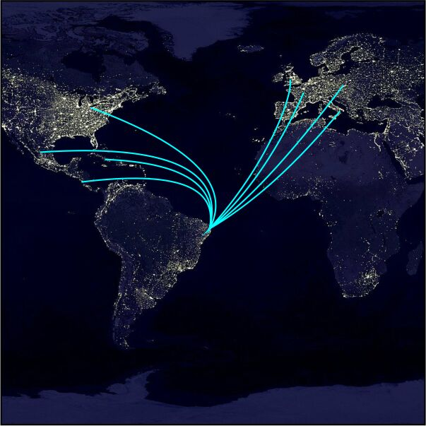
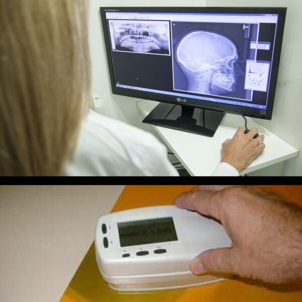

Linhas de pesquisa

O grupo desenvolve equipamentos e sensores à base de silício e novos materiais luminescentes, para a dosimetria de trabalhadores expostos, de pacientes e para avaliar o funcionamento de equipamentos de raios X.
As pesquisas melhoraram a qualidade da imagem radiológica e levaram à implantação de programas de garantia da qualidade em vários serviços de radiodiagnóstico e medicina nuclear. O grupo é apoiado pela FINEP, FACEPE, CNPq e pela Agência Internacional de Energia Atômica (AIEA) e, na medicina nuclear, é um dos Centros de Referência instalados pela AIEA para apoiar o controle da qualidade de equipamentos SPECT no país.
- Desenvolvimento de detectores de radiaçãoPesquisas com semicondutores para aplicação em espectrometria e dosimetria das radiações ionizantes.
- Dosimetria de pacientes, trabalhadores e indivíduos do públicoEstimativa da dose recebida pela população em procedimentos de radiodiagnóstico, medicina nuclear e radioterapia.
- Dosimetria numéricaSimuladores matemáticos do corpo humano para calcular a dose em órgãos e estimar o risco.
- Radiologia digitalQualidade de imagem em procedimentos de radiologia digital médica e odontológica, e aplicações em ensaios não destrutivos na indústria.
- Datação e arqueometriaEstudo de objetos de interesse histórico, geológico e arqueológico com fluorescência de raios X, difração de raios X, datação por TL/OSL e EPR.
- Novos materiais para dosimetria luminescenteCaracterização de materiais para dosimetria termoluminescente e por luminescência opticamente estimulada (LOE).
- Garantia da qualidade em radiodiagnóstico e medicina nuclearProgramas de controle de qualidade de equipamentos.
Cooperações

Os pesquisadores do grupo mantêm interação com grupos de pesquisa do Brasil e do exterior. Isso resulta em trabalhos conjuntos, na incorporação de tecnologia de ponta e na disseminação do conhecimento em países menos desenvolvidos.
Principais instituições
- ITN, Instituto de Tecnologia Nuclear
- COPPE, UFRJ
- IPEN-CNEN/SP
- IRD-CNEN/RJ
- DEN, UFMG
- CEFET/PR
- Northeast Institute of Nuclear Technology, Xi'an, China
- INFN, Istituto Nazionale di Fisica Nucleare, Gênova, Itália
- NRC, National Research Council, Canadá
- Departamentos DEMEC, DQF, DMINAS, DGEO e Arqueologia da UFPE
Produtos e patentes

Produtos transferidos para a indústria nacional
Os produtos abaixo foram desenvolvidos pelo grupo e transferidos para a indústria nacional.
- Dosímetro semicondutor
- Dosímetro multicanal
- Monitor diário para radioterapia
Patentes depositadas
- Software Controle de Qualidade em Radiodiagnóstico para Exposição a Radiação de Altas EnergiasH. J. Khoury. Patente Brasil, Propriedade Intelectual N. PI 00045746 (2002).
- Processo de Fabricação de Camadas de Silício Poroso por Exposição a Vapores Corrosivos do SilícioE. A. de Vasconcelos, B. E. dos Santos, W. M. de Azevedo e E. F. da Silva Jr.. Patente Brasil, PI 0307130-8 (2003).
- Dispositivo de Medida e Monitoramento de Radiações Ionizantes para Altas e Médias Energias, Constituído de um Filme Fino nanométrico ou micrométrico do Polímero Condutor PolianilinaE. F. da Silva Jr., W. M. de Azevedo, J. M. G. Laranjeira, E. A. de Vasconcelos e H. J. Khoury. Patente Brasil, PI 0302690-6 (2003).
- Nano Heterojunção Polianilina/Silício para Medida e Monitoramento de Gases e Radiações Ionizantes de Altas e Médias EnergiasW. M. de Azevedo, E. F. da Silva Jr., J. M. G. Laranjeira, E. A. de Vasconcelos e H. J. Khoury. Patente Brasil, PI 0305604-0 (2003).
- Novo processo para preparação de óxido de alumínio poroso dopado com carbonoW. M. de Azevedo, E. F. da Silva Jr., H. J. Khoury. Patente Brasil, PI 05xxxxx-x (2005).
- Nanodispositivo dosimétrico para radiações ionizantes, utilizando óxido de alumínio nano poroso dopado com carbono preparado eletroquimicamenteW. M. de Azevedo, E. F. da Silva Jr., H. J. Khoury. Patente Brasil, PI 05xxxxx-x (2005).